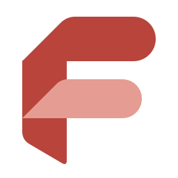
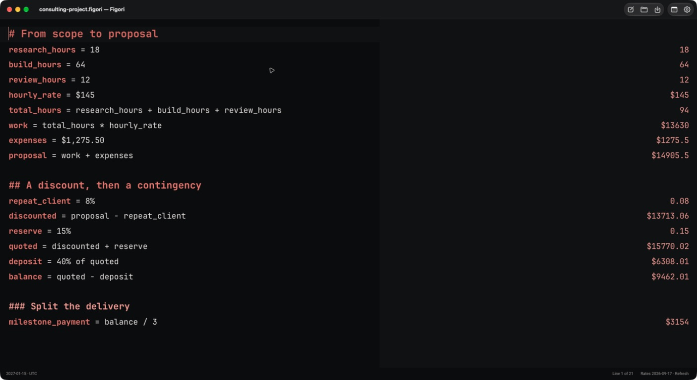
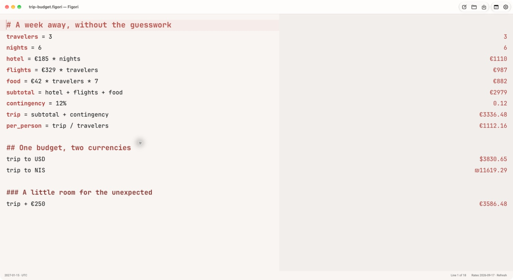
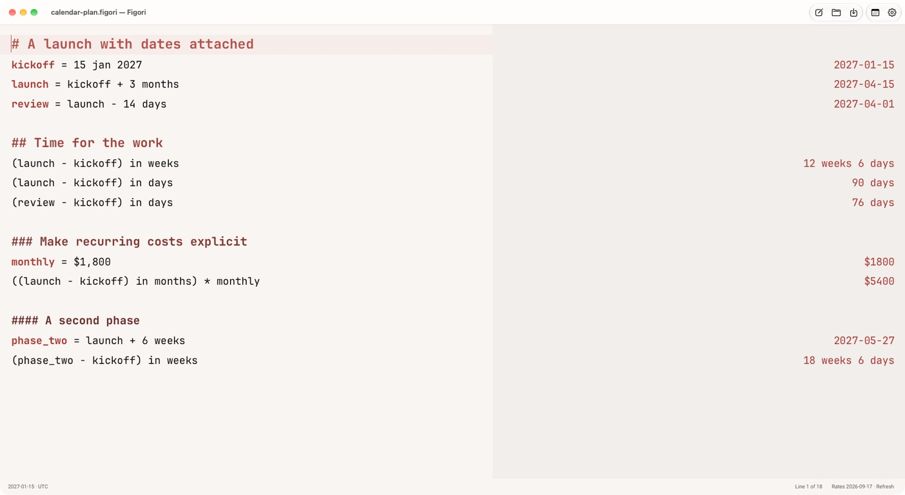

One thought flows into the next.
Name a value, use it again, change your mind. The calculations below it follow along.

FigoriA little clarity, by BeFeast
A worksheet for calculations, dates, and the notes around them.
Write the thought. See the result. Keep the whole picture.
macOS · Apple silicon · v0.3.6 preview
Signed and notarized · Free download · Public source

Name a value, use it again, change your mind. The calculations below it follow along.
Work with calendar months or elapsed time. Keep the anchor date and timezone visible, rather than buried in a formula.
Save a local .figori file with readable source and calculation settings. Bring in Numi or Markdown, and export when you need to share.
Less mental bookkeeping
Flights for three, six nights, a daily food budget. Add a contingency, split the total, then convert currencies with an explicitly refreshed exchange-rate snapshot.
Figori shows the rate date. It never invents a rate when one is unavailable.
Try this worksheet
Start with a kickoff date. Derive the launch, work backwards to review, and check the time available. Connect the plan to recurring costs without assuming every month has thirty days.
Try this worksheet
Small app. Considered details.
Room for your next thought
Figori is an early preview. Try it, inspect the source,
and help shape what comes next.
Apple silicon · Signed and notarized
macOS 0.3.6 preview. Looking for Linux? See the Omarchy preview below.
The same worksheet, on your desktop
A standalone Linux 0.3.7 preview for x86_64 Omarchy desktops. The same calculations and .figori documents, with Linux keyboard shortcuts and worksheet controls.
Linux x86_64 · v0.3.7 preview
Installation and requirements.